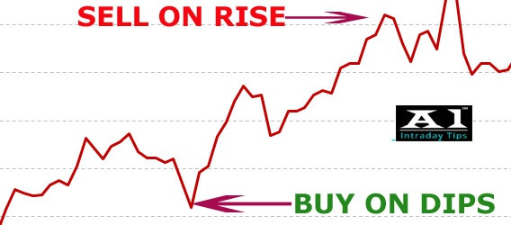

Investing Strategies
There are five major investing strategies:
- General Trading
- Selective Trading
- Long-Pull Selection
- Bargain Purchases
- Buying the Dip
General Trading
This includes paying attention to the market and trying to predict the moves of the market. This includes spreading out investment purchases to reduce the impact of the market volatility.
Selective Trading
This includes choosing specific stocks that you predict will out perform the market with a certain time frame. In order to do this investors usually examine market changes or government regulation changes.
Long-Pull Selection
This includes finding stocks that will do very well over multiple years and are also known as growth stocks. These are usually newer companies that have a lot of room to grow.
Bargain Purchases
This includes finding the stocks that are currently selling below their true value. The most common way for people to do this is by using a technique called price-to-earnings ratio. This is just dividing a company’s share price by its earnings per share.
Buying the Dip
This is what most people think of when people say they day trade. This is buying a stock when the price of it is low then selling it when it is high. Unfortunately, for most people they buy when prices are high and rising and then sell when stocks are low and dipping. This is because people get scared of losing more money and get to greedy when the price rises.
